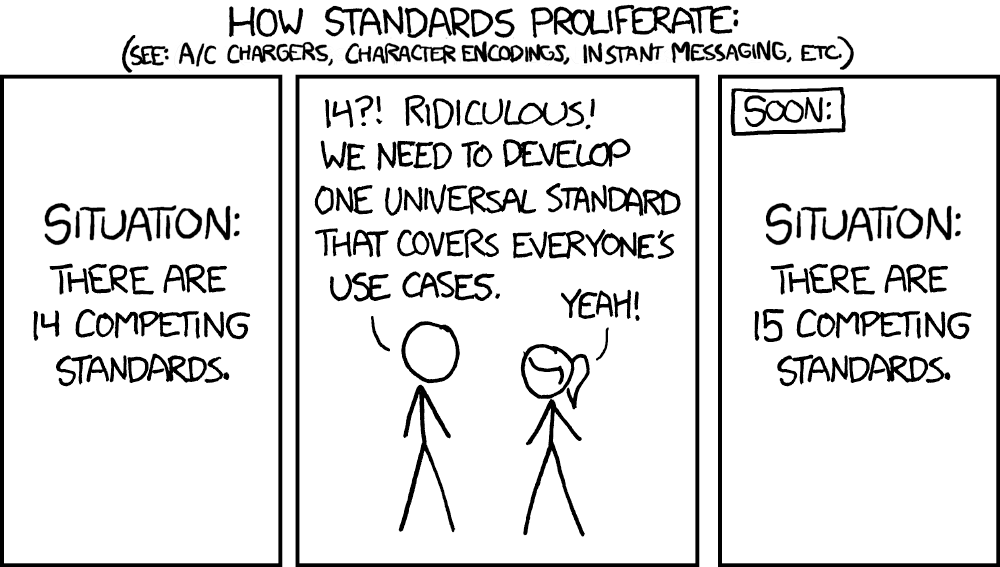
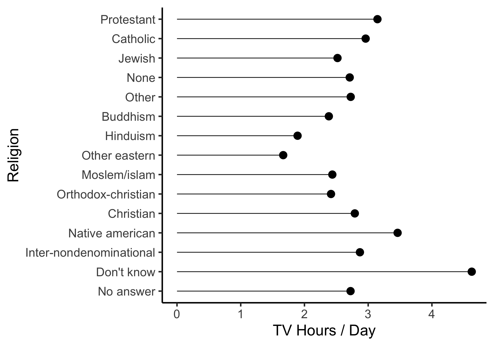
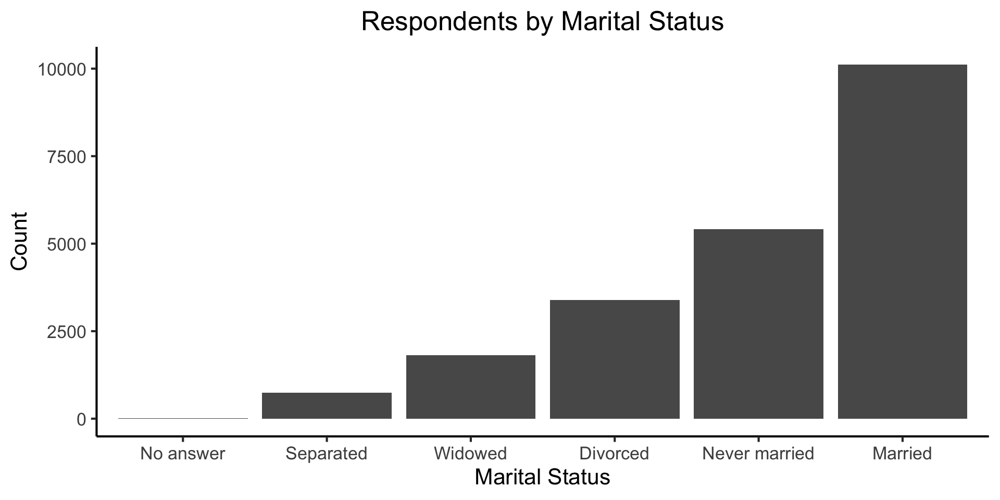
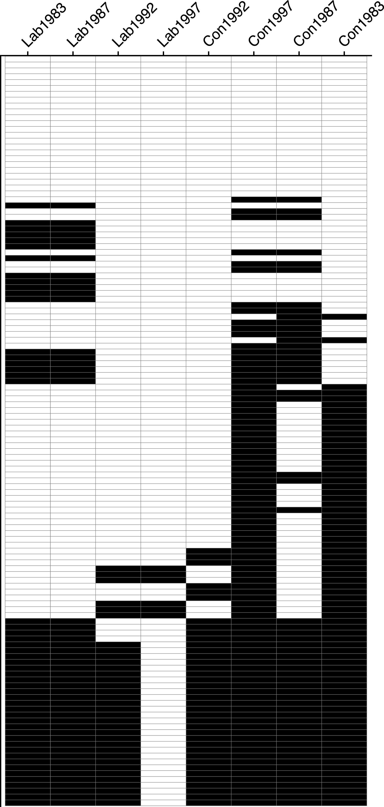
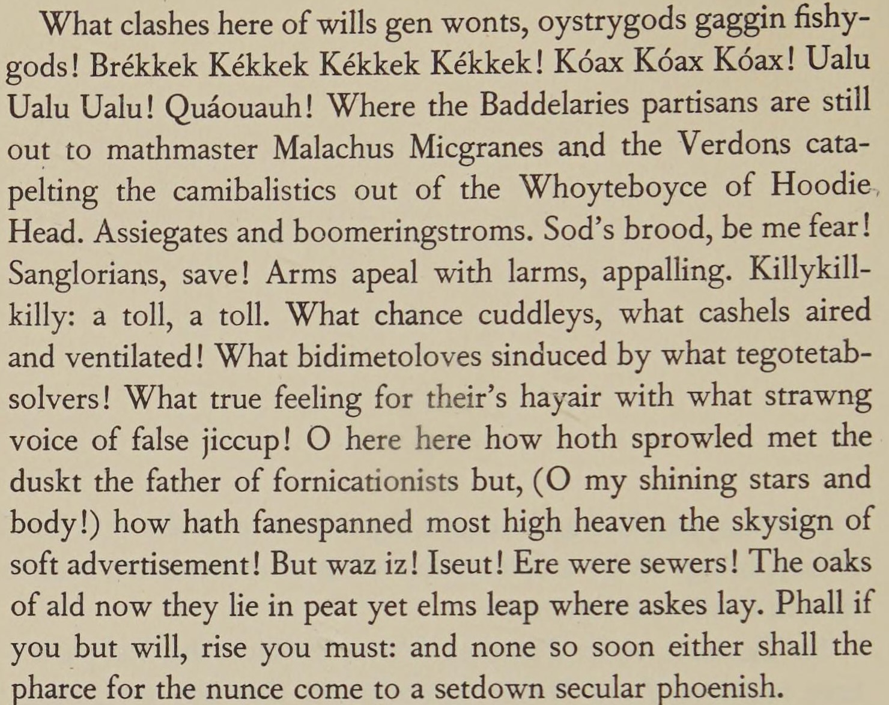

source("../_globals.r")Week 5: Data Cleaning
DSAN 5000: Data Science and Analytics
Section 02
Class Sessions
Schedule
Today’s Planned Schedule (Section 02):
| Start | End | Topic | Recording | |
|---|---|---|---|---|
| Lecture | 12:30pm | 12:40pm | Week 04 Recap → | |
| 12:40pm | 1:00pm | Quiz 2.2 | ||
| 1:00pm | 1:10pm | More on APIs → | ||
| 1:10pm | 1:40pm | Cleaning Tabular Data → | ||
| 1:40pm | 2:00pm | Cleaning Text Data → | ||
| Break! | 2:00pm | 2:10pm | ||
| Lab | 2:10pm | 2:50pm | Lab Demonstrations → | |
| 2:50pm | 3:00pm | Lab Assignment Overview → |
Quiz Time!
APIs Part 2
REST vs. SOAP vs. GraphQL
- SOAP: Standard Object Access Protocol: Operates using a stricter schema (data must have this form, must include these keys, etc.), XML only
- REST (REpresentational State Transfer): Uses standard HTTP, wide range of formats
- GraphQL (Graph Query Language): Rather than exposing several endpoints, each performing a single function, GraphQL exposes a single endpoint for queries (so that the server then goes and figures out how to satisfy these queries)
digraph G1 {
rankdir=TB;
subgraph cluster_00 {
dev[label="Developer"];
api1[label="get_users"];
api2[label="get_friends"];
label="Endpoints";
labelloc="bottom";
}
dev -> api1[label="API call"];
api1 -> dev;
dev -> api2 [label="API call (id = 5)"];
api2 -> dev;
figureOut[label="is User 5 friends w Pitbull?"]
dev -> figureOut;
}get_users and get_friends) to derive answer to “Is User 5 friends with Pitbull?”
digraph G2 {
newrank=true;
rankdir=TB;
api1[label="get_users"];
//gqlServer -> api1[label="API call"];
subgraph cluster_00 {
node [label="Developer"] dev;
node [label="GraphQL Server"] gqlServer;
margin="25.5,0.5"
dev -> gqlServer[label="GraphQL API call\n(\"is User 5 friends\nwith Pitbull?\")"];
gqlServer -> dev;
label="(Single) Endpoint";
labelloc="bottom";
}
{
rank=same;
api2[label="get_friends"];
gqlServer -> api1;
api1 -> gqlServer[label="(internal)"];
gqlServer -> api2 [label="(internal)"];
api2 -> gqlServer;
}
}What Should I Include in My API?
Key Principle: CRUD
- Create: Place a new record in some table(s)
- Read: Get data for all (or subset of) records
- Update*: Locate record, change its value(s)
- “Upsert”: Update if already exists, otherwise create
- Delete: Remove record from some table(s)
Cleaning Tabular Data
The Unexpected Pitfalls
- You find the perfect dataset for your project, only to open it and find…
Data Cleaning
- The most undervalued skill in data science!
- Regardless of industry, absurd variety of data formats1

The Data Cleaning Toolbox
- Text Editors
- Regular Expressions
- Conversion Tools
- HTML Parsers
Text Editors
- “Broken” data can often be fixed by manually examining it in a text editor!
my_data.csv
id,var_A,var_B,var_C\n
1,val_1A,val_1B,val_1C\r\n
2,val_2A,val_2B,val_2C\n
3,val_3A,val_3B,val_3C\nlibrary(readr)
data <- read_csv("assets/my_data.csv")Rows: 3 Columns: 4
── Column specification ────────────────────────────────────────────────────────
Delimiter: ","
chr (4): index, var_1, var_2, var_3
ℹ Use `spec()` to retrieve the full column specification for this data.
ℹ Specify the column types or set `show_col_types = FALSE` to quiet this message.data# A tibble: 3 × 4
index var_1 var_2 var_3
<chr> <chr> <chr> <chr>
1 A val_A1 val_A2 val_A3
2 B val_B1 val_B2 val_B3
3 C val_C1 val_C2 val_C3Regular Expressions
- The language for turning unstructured data into structured data
- In Computer Science, a whole course, if not two…
- tldr: a regular expression, or a RegEx string, represents a machine that either accepts or rejects input strings
| RegEx | [A-Za-z0-9]+ | @ | [A-Za-z0-9.-]+ | \. | (com|org|edu) | Result: |
| String A | jj1088 | @ | georgetown | . | edu | Accept✅ |
| String B | spammer | @ | fakesite!! | . | coolio | Reject |
Regular Expressions: Intuition
- The guiding principle: think of the types of strings you want to match:
- What kinds of characters do they contain? (and, what kinds of characters should they not contain?)
- What is the pattern in which these characters appear: is there a character limit? Which characters/patterns are optional, which are required?
- You can then use the RegEx syntax to encode the answers to these questions!
RegEx Syntax: Single Characters
z: Match lowercasez, a single timezz: Match two lowercasezs in a rowz{n}: Match \(n\) lowercasezs in a row[abc]: Matcha,b, orc, a single time[A-Z]: Match one uppercase letter[0-9]: Match one numeric digit[A-Za-z0-9]: Match a single alphanumeric character[A-Za-z0-9]{n}: Match \(n\) alphanumeric characters
RegEx Syntax: Repeating Patterns
z*: Match lowercasezzero or more timesz+: Match lowercasezone or more timesz?: Match zero or one lowercasezs
z* |
z+ |
z? |
z{3} |
|
|---|---|---|---|---|
"" |
✅ | ✅ | ||
"z" |
✅ | ✅ | ✅ | |
"zzz" |
✅ | ✅ | ✅ |
Example: US Phone Numbers
- Area code sometimes surrounded by parentheses:
- 202-687-1587 and (202) 687-1587 both valid!
- Which repeating pattern syntax (from the previous slide) helps us here?
| RegEx | [(]? | [0-9]{3} | [)]? | [ -] | [0-9]{3}-[0-9]{4} | Result |
"202-687-1587" |
\(\varepsilon\) | 202 | \(\varepsilon\) | - | 687-1587 | Accept |
"(202) 687-1587" |
( | 202 | ) | 687-1587 | Accept | |
"2020687-1587" |
\(\varepsilon\) | 202 | \(\varepsilon\) | 0 | 687-1587 | Reject |
Building and Testing RegEx Strings
Tidy Data
| Var1 | Var 2 | |
|---|---|---|
| Obs 1 | Val 1 | Val 2 |
| Obs 2 | Val 3 | Val 4 |
library(tidyverse)
table1# A tibble: 6 × 4
country year cases population
<chr> <dbl> <dbl> <dbl>
1 Afghanistan 1999 745 19987071
2 Afghanistan 2000 2666 20595360
3 Brazil 1999 37737 172006362
4 Brazil 2000 80488 174504898
5 China 1999 212258 1272915272
6 China 2000 213766 1280428583table2 %>% head(6)# A tibble: 6 × 4
country year type count
<chr> <dbl> <chr> <dbl>
1 Afghanistan 1999 cases 745
2 Afghanistan 1999 population 19987071
3 Afghanistan 2000 cases 2666
4 Afghanistan 2000 population 20595360
5 Brazil 1999 cases 37737
6 Brazil 1999 population 172006362How Do We Get Our Data Into Tidy Form?
- R: The Tidyverse
- Python: Pandas + Regular Expressions (lab demo!)
The Tidyverse
tibble
Homepage | Overview | Cheatsheet
library(tibble)
data <- c(3.4,1.1,9.6)
labels <- c(0,1,0)
supervised_df <- tibble(x=data, y=labels)
supervised_df
library(tibble)
dsan_df <- tibble::tribble(
~code, ~topic, ~credits,
"dsan5000", "Data Science", 3,
"dsan5100", "Probabilistic Modeling", 3
)
dsan_df- Replaces
R’s built-indata.frameobjects, but retains syntax for backwards compatibility:
# A tibble: 3 × 2
x y
<dbl> <dbl>
1 3.4 0
2 1.1 1
3 9.6 0- Provides a surprisingly useful function:
tribble()(tibble defined row-by-row)
# A tibble: 2 × 3
code topic credits
<chr> <chr> <dbl>
1 dsan5000 Data Science 3
2 dsan5100 Probabilistic Modeling 3dplyr
Homepage | Overview | Cheatsheet
Grammar of data manipulation (think verbs):
filter()select()arrange()mutate()summarize()
filter():
Code
table1 |> filter(year == 2000)# A tibble: 3 × 4
country year cases population
<chr> <dbl> <dbl> <dbl>
1 Afghanistan 2000 2666 20595360
2 Brazil 2000 80488 174504898
3 China 2000 213766 1280428583select():
Code
table1 |> select(country)# A tibble: 6 × 1
country
<chr>
1 Afghanistan
2 Afghanistan
3 Brazil
4 Brazil
5 China
6 China arrange():
Code
table1 |> arrange(population)# A tibble: 6 × 4
country year cases population
<chr> <dbl> <dbl> <dbl>
1 Afghanistan 1999 745 19987071
2 Afghanistan 2000 2666 20595360
3 Brazil 1999 37737 172006362
4 Brazil 2000 80488 174504898
5 China 1999 212258 1272915272
6 China 2000 213766 1280428583mutate():
Code
table1 |> mutate(newvar = 300)# A tibble: 6 × 5
country year cases population newvar
<chr> <dbl> <dbl> <dbl> <dbl>
1 Afghanistan 1999 745 19987071 300
2 Afghanistan 2000 2666 20595360 300
3 Brazil 1999 37737 172006362 300
4 Brazil 2000 80488 174504898 300
5 China 1999 212258 1272915272 300
6 China 2000 213766 1280428583 300summarize():
Code
table1 |>
summarize(
avg_cases = mean(cases),
avg_pop = mean(population)
)# A tibble: 1 × 2
avg_cases avg_pop
<dbl> <dbl>
1 91277. 490072924.summarize() with grouping:
Code
table1 |>
group_by(country) |>
summarize(
avg_cases = mean(cases),
avg_pop = mean(population)
)# A tibble: 3 × 3
country avg_cases avg_pop
<chr> <dbl> <dbl>
1 Afghanistan 1706. 20291216.
2 Brazil 59112. 173255630
3 China 213012 1276671928.The Rest of the Tidyverse
forcatsreadrstringrtidyrpurrrlubridate*
forcats
Homepage | Overview | Cheatsheet
- Utilities for working with factor variables (
R’s data structure for categorical variables) - factors = data + levels:
Code
month_levels <- c(
"Jan", "Feb", "Mar", "Apr",
"May", "Jun", "Jul", "Aug",
"Sep", "Oct", "Nov", "Dec"
)
d <- c("Jan","Jan","Feb","Dec")
print(d)
dataf <- parse_factor(
d,
levels=month_levels
)
print(dataf)[1] "Jan" "Jan" "Feb" "Dec"[1] Jan Jan Feb Dec
Levels: Jan Feb Mar Apr May Jun Jul Aug Sep Oct Nov DecFactors for Ordering Plot Elements
relig_summary <- gss_cat %>%
group_by(relig) %>%
summarise(
age = mean(age, na.rm = TRUE),
tvhours = mean(tvhours, na.rm = TRUE),
n = n()
)
relig_labs <- labs(
x = "TV Hours / Day",
y = "Religion"
)Without forcats:
Code
relig_summary |>
ggplot(aes(tvhours, relig)) +
geom_point(size=g_pointsize) +
geom_segment(aes(yend = relig, x=0, xend = tvhours)) +
dsan_theme("half") +
relig_labs
With forcats:
Code
relig_summary |>
mutate(relig = fct_reorder(relig, tvhours)) |>
ggplot(aes(x=tvhours, y=relig)) +
geom_point(size=g_pointsize) +
geom_segment(aes(yend = relig, x=0, xend = tvhours)) +
dsan_theme("half") +
relig_labs
Sorting Barplots with fct_infreq()
barplot_labs <- labs(
title = "Respondents by Marital Status",
x = "Marital Status",
y = "Count"
)Code
gss_cat |>
mutate(marital = marital |> fct_infreq() |> fct_rev()) |>
ggplot(aes(marital)) + geom_bar() + barplot_labs +
dsan_theme("full")
Recoding/Combining Categories
Automatically combining using fct_lump():
Code
gss_cat |>
mutate(relig = fct_lump(relig)) |>
count(relig)# A tibble: 2 × 2
relig n
<fct> <int>
1 Protestant 10846
2 Other 10637Manually Combining using fct_recode():
Code
gss_cat |>
mutate(partyid = fct_recode(partyid,
"Republican" = "Strong republican",
"Republican" = "Not str republican",
"Independent" = "Ind,near rep",
"Independent" = "Ind,near dem",
"Democrat" = "Not str democrat",
"Democrat" = "Strong democrat",
"Other" = "No answer",
"Other" = "Don't know",
"Other" = "Other party"
)) |>
count(partyid)# A tibble: 4 × 2
partyid n
<fct> <int>
1 Other 548
2 Republican 5346
3 Independent 8409
4 Democrat 7180readr
Homepage | Overview | Cheatsheet
Two key functions:
read_csv(),write_csv()2Warning!read_csv()vs.read.csv()Note that these are not the same as
R’s built-inread.csv()andwrite.csv()! The built-inRfunctions will produce a plaindata.frameobject, not atibble
gdp_df <- read_csv("https://gist.githubusercontent.com/jpowerj/fecd437b96d0954893de727383f2eaf2/raw/fec58507f7095cb8341b229d6eb74ce53232d663/gdp_2010.csv")
gdp_df |> head(6)- Can handle URLs as well!
- Share data+code in seconds by using in combination with GitHub Gist
- (No more
read_csv()path issues either…) - Gist dataset →
Rows: 204 Columns: 4
── Column specification ────────────────────────────────────────────────────────
Delimiter: ","
chr (2): name, code
dbl (2): year, value
ℹ Use `spec()` to retrieve the full column specification for this data.
ℹ Specify the column types or set `show_col_types = FALSE` to quiet this message.# A tibble: 6 × 4
name code year value
<chr> <chr> <dbl> <dbl>
1 Afghanistan AFG 2010 15936800636.
2 Albania ALB 2010 11926953259.
3 Algeria DZA 2010 161207268655.
4 American Samoa ASM 2010 576000000
5 Andorra AND 2010 3355695364.
6 Angola AGO 2010 82470913121.purrr: Functional Programming
Homepage | Overview | Cheatsheet | Tutorials, with Applications
Provides an anonymous function operator ~, arguments get named .x, .y:
Code
my_points <- c("Midterm"=18, "Final"=300)
total_points <- c("Midterm"=20, "Final"=400)
(avg_score <- map2(my_points, total_points,
~ list(frac=.x / .y, pct=(.x/.y)*100)))$Midterm
$Midterm$frac
[1] 0.9
$Midterm$pct
[1] 90
$Final
$Final$frac
[1] 0.75
$Final$pct
[1] 75Along with helpful functions for transforming the output
Code
list_flatten(avg_score)$Midterm_frac
[1] 0.9
$Midterm_pct
[1] 90
$Final_frac
[1] 0.75
$Final_pct
[1] 75Code
every(avg_score, ~ .x$frac > 0.5)[1] TRUElubridate*
Homepage | Overview | Cheatsheet
Caution: Importing
lubridate
Note that lubridate does not get loaded with the other packages in the tidyverse when you call library(tidyverse). It needs to be imported explicitly:
library(tidyverse)
library(lubridate)Cleaning Text Data
One of the Scariest Papers of All Time
Text Preprocessing For Unsupervised Learning: Why It Matters, When It Misleads, And What To Do About It (Denny and Spirling 2018) (PDF Link)

The Secret Behind All Text Analysis



| doc_id | text |
texts |
Kékkek |
voice |
|
|---|---|---|---|---|---|
| 0 | 0 | 6 | 0 | 1 | |
| 1 | 0 | 0 | 3 | 1 | |
| 2 | 6 | 0 | 0 | 0 |
| doc_id | text |
kekkek |
voice |
||
|---|---|---|---|---|---|
| 0 | 6 | 0 | 1 | ||
| 1 | 0 | 3 | 1 | ||
| 2 | 6 | 0 | 0 |
Lab Demonstrations
Lab Demo: Data Cleaning in Python
Alternative Lab Demo: Regular Expressions for Data Cleaning
Lab Assignment Overview
References
Denny, Matthew J., and Arthur Spirling. 2018. “Text Preprocessing For Unsupervised Learning: Why It Matters, When It Misleads, And What To Do About It.” Political Analysis 26 (2): 168–89. https://doi.org/10.1017/pan.2017.44.
Immerwahr, Daniel. 2019. How to Hide an Empire: A History of the Greater United States. Farrar, Straus and Giroux.